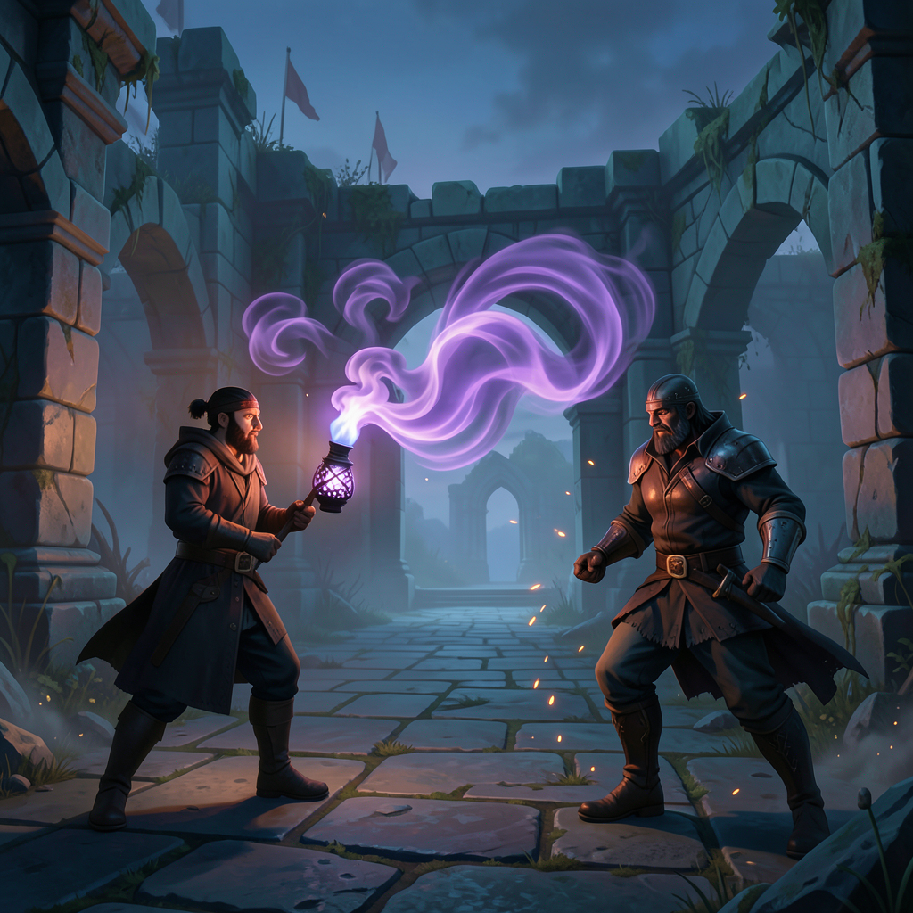

Side-on cinematic
Generated · seed 7183401Strong character and torch silhouette, dramatic face-to-face staging, and a sculptural smoke ribbon. Reads like a cinematic action keyframe.
Trade-off: the cloud looks beautiful, but its gameplay footprint and route occupancy are less explicit.